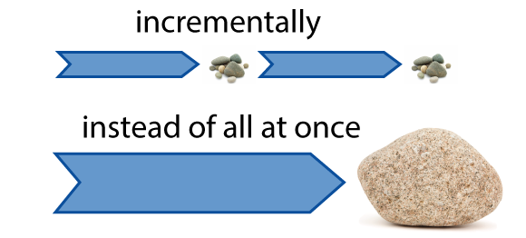
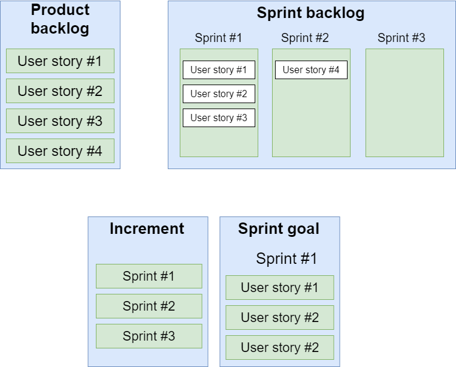

Agile. Scrum.
What is Agile?
Agile is a time boxed, iterative approach to software delivery that builds software incrementally from the start of the project, instead of trying to deliver it all at once near the end.
Manifesto for Agile Software Development

| Characteristics | Agile approach | Traditional approach |
|---|---|---|
| Organizational structure | Iterative | Linear |
| User requirements | Interactive input | Clearly defined before implementation |
| Involvement | High | Low |
| Model preference | Agile model favors adaption | Traditional model favors anticipation |
| Scale of projects | Large-scale | Small and medium scale |
Agile Methodologies
What is Scrum?
It is a framework within which people can address complex adaptive problems, while productively and creatively delivering products of the highest possible value.
Scrum is:
- Lightweight
- Simple to understand
- Difficult to master
The main elements of the framework are:
- Scrum ‐ teams;
- Roles associated with them;
- Events(ceremonies);
- Artifacts;
- Rules
The key Scrum methodology artifacts
Scrum ceremonies
- Sprint planning meetings
- Daily standups
- The sprint review
- The retrospective

Advantages
- Scrum has more transparency and visibility
- It increases the team accountability
- Scrum is easy with changes
- Scrum is a cost saving development methodology
Disadvantages
- Scrum need to be experienced and high-level persons
- Scrum team requires experience and devoted team.
- Less experienced scrum master can ruin the whole process of development.
- If the task is defined poorly then the project can be lead to inaccuracies.